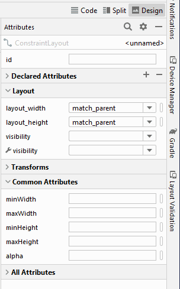

Hello Kitty
После установки Android Studio (далее Студия) можно приступать к созданию своей первой программы.
Учтите, что студия постоянно обновляется, поэтому внешний вид окон и другие детали могут отличаться от данного примера. Иногда изменения носят косметический характер и новичкам достаточно просто разобраться и вникнуть в изучаемый материал. А иногда изменения слишком значительны и могут сбить с толку.
В качестве языка программирования для Android используется Java или Kotlin. Для создания пользовательского интерфейса используется XML.
По традиции, заложенной в прошлом веке, каждый программист должен был написать «Hello World!» (Здравствуй, Мир!) в качестве первой программы. Времена меняются, и программа «Hello World!» уже встроена в среду разработки под Android в целях совместимости, а современные программисты должны писать программу Hello Kitty!
Разобьём задачу на две части. Сначала запустим готовую программу Hello World! без написания кода, чтобы убедиться, что весь инструментарий корректно установился, и мы можем создавать и отлаживать программы. А потом уже напишем свою первую программу.
Создание нового проекта
Запускаем Студию и выбираем File | New | New Project.... Появится диалоговое окно мастера.
Окно имеет несколько разделов. В основном, мы будем использовать раздел Phone and Tablet.
Здесь следует выбрать внешний вид экрана приложения. Предложенные шаблоны позволяют сэкономить время на написание стандартного кода для типичных ситуаций. Опытный разработчик может вручную написать любой из предложенных вариантов, используя вариант No Activity, где никаких заготовок не будет.
Несколько лет назад был только один шаблон. Список шаблонов постоянно меняется (добавляют и удаляют). В 3.1 было 13, в Android Studio 3.2 добавили 14-й шаблон Fragment+ViewModel. А в 3.3 число сократилось до 12 (причём один из них относится к экзотическому C++). В версии 4.0 шаблонов стало 15.
В апреле 2023 года вышла версия Flamingo, где число шаблонов сократилось до 9 (на самом деле шаблоны остались, но их можно увидеть в другом месте). Так выглядело окно шаблонов в предыдущих версиях до Flamingo.
В версию Dolphin добавили новый шаблон Game Activity(C++) (стало 21).- No Activity
- Basic Activity
- Basic Activity (Material 3)
- Bottom Navigation Activity
- Empty Compose Activity
- Empty Compose Activity (Material 3)
- Empty Activity
- Fullscreen Activity
- Google AdMob Ads Activity
- Google Maps Activity
- Google Pay Activity
- Login Activity
- Primary/Detail Flow
- Navigation Drawer Activity
- Responsive Activity
- Settings Activity
- Scrolling Activity
- Tabbed Activity
- Fragment + ViewModel
- Game Activity(C++) (NEW!)
- Native C++
В версию Chipmunk добавили три новых шаблона (стало 20).
Шаблон Empty Activity предназначен для обычных телефонов. На картинке над названием шаблона вы видите приблизительный вид приложения с использованием данной заготовки. Для учебных программ в 99% подойдёт этот вариант. Практически все примеры на сайте написаны с помощью данного шаблона.
Шаблон Empty Activity (Flamingo) предназначен для создания compose-приложений (на сайте есть отдельная категория).
Выбираем Empty Views Activity. В следующем окне настраиваются параметры проекта.
Поле Name - понятное имя для приложения, которое будет отображаться в заголовке приложения. По умолчанию у вас уже может быть My Application. Заменим на Hello World. В принципе вы могли написать здесь и Здравствуй, мир!, но у Android есть замечательная возможность выводить нужные строки на телефонах с разными языками. Скажем, у американца на телефоне появится надпись на английском, а у русского - на русском. Поэтому в первоначальных настройках всегда используются английские варианты, а локализованные строки подготовите позже. Необходимо сразу вырабатывать привычку к правильному коду.
Поле Package name формирует специальный Java-пакет. В Java используется перевёрнутый вариант для наименования пакетов, поэтому сначала идёт ru, а потом уже название сайта. Пакет служит для уникальной идентификации вашего приложения, когда вы будете его распространять. Если сто человек напишет сто приложений с названием "Cat", то будет непонятно, где приложение, написанное разработчиком Василием Котовым. А приложение с именем пакета ru.vaskakotov.cat проще найти. Обратите внимание, что Гугл в своей документации использует пакет com.example в демонстрационных целях. Если вы будете просто копировать примеры из документации и в таком виде попытаетесь выложить в Google Play, то у вас ничего не выйдет - это название зарезервировано и запрещено к использованию в магазине приложений.
Третье поле Save location позволяет выбрать место на диске для создаваемого проекта. Вы можете создать на своём диске отдельную папку для своих проектов и хранить свои программы в ней. Студия запоминает последнюю папку и будет автоматически предлагать сохранение в ней. В случае необходимости вы можете задать другое местоположение для отдельного проекта через кнопку с значком папки.
В поле Language можно выбрать язык: Kotlin или Java.
В блоке Minimum SDK выбираем минимальную версию системы, под которую будет работать приложение. У меня в наличии телефон с минимальной версией Android 6.0, поэтому я выставляю этот вариант.
Если щёлкнуть по ссылке Help me choose, то откроется окно с графиком. Если вам интересно, можете посмотреть, но котиков там нет.
Мы закончили с первоначальной настройкой. Нажимаем кнопку Finish и смотрим, что дальше будет.
А дальше студия формирует проект и создаёт необходимую структуру из различных файлов и папок. Поначалу глаза разбегаются. Давайте разбираться.
Боковая левая часть студии имеет несколько боковых вкладок. Скорее всего у вас будет активна первая вкладка 1:Project. Вкладки Structure и ResourceManager и другие используются гораздо реже.
В левой части среды разработки на вкладке Android появится иерархический список из папок, которые относятся к проекту. В некоторых случаях желательно переключиться на режим Project, который показывает истинное расположение файлов. Но на первых порах удобнее использовать именно вид Android, который прячет служебные файлы, чтобы не путать новичков.
Содержание проекта
Вкладка Android содержит две основные папки: app и Gradle Scripts. Первая папка app является отдельным модулем для приложения и содержит все необходимые файлы приложения - код, ресурсы картинок и т.п. Вторая папка служит для различных настроек, управления проектом и многих других вещей.
Сейчас нас должна интересовать папка app. Раскройте её. В ней находятся папки: manifest, java, res.
manifests
Папка manifests (раньше была в единственном числе) содержит единственный файл манифеста AndroidManifest.xml. В этом файле должны быть объявлены все активности, службы, приёмники и контент-провайдеры приложения. Также он должен содержать требуемые приложению разрешения. Например, если приложению требуется доступ к сети, это должно быть определено здесь. «AndroidManifest.xml» можно рассматривать, как описание для развёртывания Android-приложения.
java
Папка java содержит три подпапки - одну рабочую и два для тестов. Рабочая папка имеет название вашего пакета и содержит файлы классов. Сейчас там один класс MainActivity. Папки для тестов можете не трогать. Если вы знаете, как работают пакеты в Java, то можете создавать новые папки и подпапки.
res
Папка res содержит файлы ресурсов, разбитых на отдельные подпапки. В режиме Android выводятся виртуальные папки, если вы посмотрите на реальное содержимое на диске компьютера, то структура будет немного иной. Чтобы увидеть реальную структуру, не обязательно открывать Проводник (Windows) и искать там свой проект, можно просто переключиться в режим Project.
- drawable— в этих папках хранят графические ресурсы - картинки и xml-файлы, описывающие цвет и фигуры. В реальности на диске находятся папки drawable, drawable-anydpi, drawable-hdpi, drawable-mdpi, drawable-v24, drawable-xhdpi, drawable-xxhdpi. Состав папок менялся в каждой версии студии, сейчас там вообще две папки drawable и drawable-v24
- layout— в данной папке содержатся xml-файлы, описывающие внешний вид форм и различных элементов форм. После создания проекта там уже имеется файл activity_main.xml, который отвечает за внешний вид главного окна приложения
- mipmap— здесь хранят значки приложения под разные разрешения экрана. В реальности это папки mipmap-anydpi-v26, mipmap-hdpi, mipmap-mdpi, mipmap-xhdpi, mipmap-xxhdpi, mipmap-xxxhdpi
- values— тут размещаются строковые ресурсы, ресурсы цветов, тем, стилей и измерений, которые мы можем использовать в нашем проекте. Здесь вы можете видеть файлы colors.xml, strings.xml, styles.xml и папку themes с двумя файлами themes.xml для светлой и тёмной темы приложения. В старых проектах был ещё файл dimens.xml, сейчас от него отказались
Со временем вы будет свободно ориентироваться в этих папках, пока не забивайте себе голову.
Сразу покажу приём, который вам пригодится в дальнейшем при обновлении библиотек. Откройте файл build.gradle, который относится к модулю.
Там будут подсвечены несколько строк у библиотек, у которых доступны обновления.
При подведении мыши появится подсказка, что библиотека устарела. Выбираем пункт для обновления Change to .... Повторяйте эти шаги для других библиотек при необходимости.
Затем нажмите ссылку синхронизации Sync Now в верхнем правом углу студии.
Данным способом вы потом будете неоднократно пользоваться в своих проектах, когда библиотеки будут устаревать. Студия сама определит, что пора обновиться (это относится не ко всем библиотекам, некоторые нужно проверять вручную).
Работа с проектом - Здравствуй, Мир!
Как уже говорилось, программа Hello, World! уже встроена в любой новый проект, поэтому вам даже не нужно ничего писать. Просто нужно запустить проект и получить готовую программу!
Для изучения вам нужно открыть два файла - MainActivity.kt (скорее всего он уже открыт) и activity_main.xml (res/layout) в центральной части Студии. Если файлы не открыты, то откройте их самостоятельно двойным щелчком для редактирования (или просмотра). Таким способом вы можете открыть любой нужный вам файл.
Не будем пока изучать код, а просто нажмём на зелёный треугольник Run (Shift+F10) на панели инструментов в верхней части студии для запуска приложения.
Если вы не настроили эмулятор, значит вы не читали предыдущий урок. Настройте сначала эмулятор и запускайте проект снова. Либо подключайте реальное устройство.
Если всё сделали правильно, то в эмуляторе или на устройстве загрузится ваша программа. Поздравляю!
Итак, если программа запустилась, то увидите окно приложения с надписью Hello World!. В старых проектах внешний вид окна был немного другой, в нём выводился заголовок. Это поведение настраивается в темах. Сейчас по умолчанию используют тему Theme.Material3.DayNight.NoActionBar.
Если выбрать тему с заголовком (темы изучаются в другой статье), то увидим другое окно.
Заголовок у программы будет также Hello World, он берётся из названия проекта. Все эти строки можно найти в файле res/values/strings.xml и отредактировать при желании.
Теперь посмотрим на код. Сначала изучим activity_main.xml.
Смотреть его можно в разных режимах - Code, Split, Design (до версии 3.6 - Design и Text).
Откройте в режиме Code. Подробнее о режимах чуть ниже.
<xml version="1.0" encoding="utf-8"?>
<androidx.constraintlayout.widget.ConstraintLayout
xmlns:android="http://schemas.android.com/apk/res/android"
xmlns:app="http://schemas.android.com/apk/res-auto"
xmlns:tools="http://schemas.android.com/tools"
android:layout_width="match_parent"
android:layout_height="match_parent"
tools:context=".MainActivity">
<TextView
android:layout_width="wrap_content"
android:layout_height="wrap_content"
android:text="Hello World!"
app:layout_constraintBottom_toBottomOf="parent"
app:layout_constraintLeft_toLeftOf="parent"
app:layout_constraintRight_toRightOf="parent"
app:layout_constraintTop_toTopOf="parent" />
</androidx.constraintlayout.widget.ConstraintLayout>
Сейчас в студии используется новый код шаблона на основе ConstraintLayout, который появился в Android Studio 2.3 в марте 2017 года. Раньше использовался другой код с RelativeLayout (а ещё раньше и другой код с LinearLayout). Если вам будут попадаться старые примеры, то в студии есть контекстное меню, которое поможет сконвертировать старый код в новый.
Немного о XML-коде. Имеется специальный контейнер ConstraintLayout, в котором размещён компонент TextView, предназначенный для вывода текста.
Теперь посмотрим на Kotlin-код (MainActivity.kt)
package ru.alexanderklimov.helloworld
import androidx.appcompat.app.AppCompatActivity
import android.os.Bundle
class MainActivity : AppCompatActivity() {
override fun onCreate(savedInstanceState: Bundle?) {
super.onCreate(savedInstanceState)
setContentView(R.layout.activity_main)
}
}
В первой строке идёт название пакета - его мы задавали при создании проекта (Package Name). Далее идут строки импорта необходимых классов для проекта. Для экономии места они свёрнуты в одну группу. Разверните её. Если однажды вы увидите, что имена классов выводятся серым цветом, значит они не используются в проекте (подсказка Unused import statement) и можете спокойно удалить лишние строки. Также они могут удаляться автоматически (настраивается).
Далее идёт объявление самого класса, который наследуется (двоеточие :) от абстрактного класса Activity. Это базовый класс для всех экранов приложения. У вас будет AppCompatActivity. В старых версиях не было плюшек, которые появились после Android 4, поэтому для них была создана специальная библиотека совместимости, которая позволяет использовать новинки от новых версий Android в старых программах. Класс AppCompatActivity как раз и относится к библиотеке совместимости. Считайте её родственником базовой Activity. У неё есть все нужные методы и вспомогательные классы, но названия могут немного различаться.
В самом классе мы видим метод onCreate() – он вызывается, когда приложение создаёт и отображает разметку активности. Метод помечен ключевым словом override (переопределён из базового класса). Ключевое слово может пригодиться вам. Если вы сделаете опечатку в имени метода, то компилятор сможет предупредить вас, сообщив об отсутствии такого метода у родительского класса Activity.
Разберём код метода.
Строка super.onCreate(savedInstanceState) – это конструктор родительского класса, выполняющий необходимые операции для работы активности. Эту строчку вам не придётся трогать, оставляйте без изменений.
Вторая строчка setContentView(R.layout.activity_main) представляет больший интерес. Метод setContentView(int) подключает содержимое из файла разметки. В качестве аргумента мы указываем имя файла без расширения из папки res/layout. По умолчанию проект создаёт в нём файл activity_main.xml. Вы можете переименовать файл или создать свой файл с именем cat.xml и подключить его к своей активности. Тогда код будет выглядеть так:
setContentView(R.layout.cat)
Чтобы ваш код был аккуратным, старайтесь придерживаться стандартов. Если вы создаёте разметку для активности, то используйте префикс activity_ для имени файла. Например, разметка для второй активности может иметь имя activity_second.xml.
Hello Kitty!
Вы создали новую программу, но это ещё не повод считать себя программистом, так как вы не написали не единой строчки кода. Настало время набраться смелости и создать программу "Hello Kitty!".
Создаём новый проект. Снова выбираем шаблон Empty Views Activity и устанавливаем нужные настройки.
На данный момент наша программа слишком проста. Представьте себе, что у вас на экране должны располагаться несколько кнопок, текстовых полей, картинок. Каждому объекту нужно задать размеры, координаты, цвет, текст и так далее. Android поддерживает способ, основанный на XML-разметке, который будет напоминать разметку веб-страницы. Начинающие программисты могут использовать визуальный способ перетаскивания объектов с помощью мыши. Более продвинутые могут писать код вручную. Чаще используется комбинированный подход.
Файлы XML-разметки находятся в папке res/layout вашего проекта. Слово "res" является сокращением от слова "resources" (ресурсы). Папка содержит ресурсы, не связанные с кодом. Кроме разметки, там же содержатся изображения, звуки, строки для локализации и т.д.
Раскройте слева в структуре проектов папки res/layout и дважды щёлкните на файле activity_main.xml, если он у вас закрыт. Обратите внимание, что XML-файлы можно просматривать в разных режимах: текстовом, визуальном и смешанном. Для этого предназначены три вкладки в верхней части окна редактора: Code, Split, Design (если вы не кот и не пользуетесь мышкой, а предпочитаете клавиатуру, то используйте комбинацию Alt + Shift + Left/Right Arrow (Windows) для циклического переключения между режимами).
Переключитесь в режим Code (текстовый режим).
Структура XML-файла достаточна проста - стандартное дерево XML-элементов, где каждый узел является именем класса View (TextView - один из элементов View). Вы можете создать интерфейс программы, используя структуру и синтаксис XML. Подобный подход позволяет разделить код программы и визуальное представление.
Когда разметка открыта в графическом представлении, то слева от основной части редактора кода можно увидеть панель инструментов, в которой сгруппированы различные элементы по группам Widgets, Text, Layouts и так далее. В группе Buttons найдите элемент ImageButton, перетащите её на форму и отпустите. Точное расположение нас не интересует, поэтому не заморачивайтесь по этому поводу, постарайтесь разместить компонент в центре экрана активности. У вас появится диалоговое окно с просьбой выбрать изображение для кнопки. Пока выбирайте любую, например, первую. Потом заменим.
Теперь научимся менять фон для экрана приложения. Сейчас у нас экран белого цвета. Возвращаемся в файл разметки activity_main.xml. Справа найдите вкладку Attributes, в которой отображаются свойства для выбранного элемента. А слева есть вкладка Component Tree, который отображает структуру компонентов на экране. Вам нужно нужно выделить какой-нибудь компонент, что на вкладке свойств увидеть все доступные свойства компонента. Новички часто путаются на первых порах и начинают менять свойства не у тех элементов, которые им были нужны. Сейчас у вас есть окно активности, графическая кнопка ImageButton и текстовая метка TextView с надписью Hello World!. Пощёлкайте по этим элементами, чтобы увидеть, как меняется содержание свойств в панели свойств. Так как мы собираемся работать с фоном экрана приложения, то щёлкните на ConstraintLayout. В панели свойств отобразятся самые употребительные свойства выбранного компонента. К ним относятся идентификатор, ширина и высота.
Прокручиваем список атрибутов в All attributes и находим свойство background. Щёлкните рядом с этим словом во второй колонке, где нужно прописывать значения. Появится текстовое поле, в которое можно ввести значение вручную. Слева есть значок выбора цвета из диалогового окна. Справа есть маленькая кнопка, которая запустит диалоговое окно для создания ресурса. Выберем её.
Переходим на вкладку Color и выбираем цвет. Вы можете выбрать цвет, определённый в приложении (секция app) или в системе (секция android).
Давайте выберем цвет design_default_color_secondary и нажмём кнопку OK.
Экран окрасится в розовый цвет. Получилось глаМУРненько (в предыдущих версиях использовался другой цвет, поэтому здесь расхождение между описанием и реальным цветом. Можете самостоятельно попытаться установить розовый цвет.
Если переключиться в текстовый режим, то увидим, что у элемента ConstraintLayout добавилась строчка:
android:background="@color/design_default_color_secondary" // Flamingo Material3
android:background="@color/colorAccent" // в старых версиях другая система цветов
Мы связали фон экран с именем цветового ресурса. Существует неправильный подход, когда можно сразу напрямую указать значение цвета.
android:background="#ffffc0cb"
Старайтесь так не делать, всегда используйте ресурсы.
Далее поменяем картинку для графической кнопки. Находим подходящее изображение и копируем его в папку res/drawable. Картинку можете взять у меня.

Простое перетаскивание из проводника в папку студии не сработает. Поэтому лучше скопировать картинку в буфер, затем щёлкнуть правой кнопкой мыши на папке drawable в студии, выбрать команду "Вставить". Сначала появится первое диалоговое окно для выбора папки, выбираем папку drawable.
Возможно первое окно у вас не появится, тогда в следующем диалоговом окне подтверждаем операцию копирования файла.
Когда вы поместите графический файл в указанную папку, то студия автоматически создаёт ресурс типа Drawable с именем файла без расширения, к которому можно обращаться программно.
Выделяем элемент ImageButton на форме и в панели свойств выбираем свойство srcCompat, щёлкаем на кнопку и выбираем в диалоговом окне ресурс в категории Drawable - вы там должны увидеть ресурс pinkhellokitty (имя добавленного ранее файла).
Мы закончили работу с графическим интерфейсом приложения. Напоследок, выделите элемент TextView с надписью Hello, World и в окне свойств посмотрите на его идентификатор (ID). Если там пусто, то удалите его, он не оправдал наших надежд. В разделе Text найдите компонент TextView (самый первый) и перетащите его на форму приложения. Постарайтесь разместить его под графической кнопкой с котёнком.
У этого компонента точно будет что-то написано в свойстве id. Скорее всего, это будет textView. Запомните его. Впрочем, мы могли не удалять первый компонент, а прописать идентификатор вручную. Но мне пришлось бы объяснять лишние детали, а так сразу получили результат. Вот я не удалял его и у меня экран выглядит так. А у вас будет текст TextView. Ничего страшного.
Если текст вам кажется мелковатым, то у свойства textAppearance установите значение AppCompat.Display2.
У меня получилось следующее.
<?xml version="1.0" encoding="utf-8"?>
<androidx.constraintlayout.widget.ConstraintLayout
xmlns:android="http://schemas.android.com/apk/res/android"
xmlns:app="http://schemas.android.com/apk/res-auto"
xmlns:tools="http://schemas.android.com/tools"
android:layout_width="match_parent"
android:layout_height="match_parent"
android:background="#ffffc0cb"
tools:context=".MainActivity">
<TextView
android:id="@+id/textView"
android:layout_width="wrap_content"
android:layout_height="wrap_content"
android:textAppearance="@style/TextAppearance.AppCompat.Display2"
app:layout_constraintBottom_toBottomOf="parent"
app:layout_constraintLeft_toLeftOf="parent"
app:layout_constraintRight_toRightOf="parent"
app:layout_constraintTop_toBottomOf="@+id/imageButton"
tools:text="Имя кота" />
<ImageButton
android:id="@+id/imageButton"
android:layout_width="wrap_content"
android:layout_height="wrap_content"
android:layout_marginTop="32dp"
app:layout_constraintEnd_toEndOf="parent"
app:layout_constraintStart_toStartOf="parent"
app:layout_constraintTop_toTopOf="parent"
app:srcCompat="@drawable/pinkhellokitty" />
</androidx.constraintlayout.widget.ConstraintLayout>
Здесь очень много кода, который генерирует ConstraintLayout при размещении и выравнивании компонентов. Это новый контейнер, к которому нужно привыкать. Сейчас нет смысла объяснять принцип его работы, на сайте есть отдельная статья по нему. Пока советую при ручном размещении нажимать значок Infer Constraints (изображение волшебной палочки) в режиме дизайна - студия попытается предугадать нужные настройки самостоятельно.
Различия c Java начинаются с имени файла класса MainActivity.kt. У него расширение kt вместо java, но располагается в аналогичном пакете как у Java. Скорее всего он у вас уже открыт в редакторе. Если нет, то двойным щелчком запустите его из левой части студии.
Синтаксис кода немного отличается от Java. Первое, что бросается в глаза - не нужно ставить точку с запятой в конце оператора.
Так как мы собираемся менять текст в текстовой метке, необходимо прописать данный элемент в коде. До метода onCreate() наберите строчку:
private lateinit var mHelloTextView: TextView
Мы объявили переменную типа TextView под именем mHelloTextView.
Если вы набирали вручную и при подсказках использовали клавишу Enter, то класс TextView автоматически импортируется и запись появится в секции import. Если вы просто копируете текст с сайта, то студия подчеркнёт название класса TextView и предложит импортировать его вручную.
Далее внутри метода onCreate() после вызова метода setContentView() добавьте строку:
mHelloTextView = findViewById(R.id.textView) // помните, я просил запомнить идентификатор?
Избегайте соблазна скопировать строку с сайта и вставить в код, пишите самостоятельно и активно используйте автозавершение (Ctrl+Пробел) при наборе слов. Студия часто сама активно помогает подсказками. Теперь система знает о существовании элемента TextView, и мы можем к нему обращаться для изменения различных свойств, например, поменять текст.
Далее объявляем компонент ImageButton и пишем код для обработчика щелчка - обращаемся к элементу mHelloTextView и через его метод setText() программно меняем текст на нужные слова.
Общий код класса получится следующим. Я намерено оставил вещи, которые можно было упростить.
package ru.alexanderklimov.hellokot
import android.os.Bundle
import android.widget.ImageButton
import android.widget.TextView
import androidx.appcompat.app.AppCompatActivity
class MainActivity : AppCompatActivity() {
private lateinit var mHelloTextView: TextView
override fun onCreate(savedInstanceState: Bundle?) {
super.onCreate(savedInstanceState)
setContentView(R.layout.activity_main)
mHelloTextView = findViewById(R.id.textView)
var imageButton: ImageButton = findViewById(R.id.imageButton)
// альтернативный вариант
// val imageButton = findViewById<ImageButton>(R.id.imageButton)
// или val imageButton = findViewById(R.id.imageButton) as ImageButton
imageButton.setOnClickListener {
mHelloTextView.setText("Hello Kitty")
}
}
}
Запускаем программу и нажимаем на кнопку с изображением котёнка. Если всё сделали правильно, то отобразится замечательная фраза. С этого момента можете считать себя настоящим программистом - вы научились создавать цветовые и графические ресурсы, менять фон у приложения через XML-разметку, обрабатывать нажатия кнопки и выводить текстовые сообщения.

В данном случае я написал код в Java-стиле, не используя особенностей Kotlin. Студия подчеркнёт волнистой чертой метод setText() и предложить заменить его на свойство.
Kotlin позволяет заменить пары Java-методов вида getXX/setXX свойствами без приставок. Были методы getText()/setText(), остались рожки да ножки свойство text. Если вы что-то присваиваете свойству, значит вы хотите использовать setText(), а если хотите прочитать значение свойства - значит вы хотите вызвать getText(). Вот так изящно работает Kotlin.
Второй момент связан с рефакторингом кода. Раньше в эпоху Java было принято присваивать глобальным переменным имена с приставкой m (member). Сейчас в этом нет необходимости, студия выделяет подобные переменные другим цветом. Чтобы вручную не изменять в проекте все упоминания переменной, используют так называемый рефакторинг (изменение кода без потери его функциональности). Сделать это проще всего через комбинацию клавиш SHIFT+F6. Выделяем нужное слово, нажимаем указанную комбинацию клавиш и выбираем один из предложенных вариантов или печатаем свой вариант. В нашем случае подойдёт вариант helloTextView.
Можно заменить строчку кода.
imageButton.setOnClickListener {
helloTextView.text = "Hello Kitty!"
}
В папке app\build\outputs\apk проекта можно найти готовый APK-файл, который вы можете выложить у себя на сайте и дать скачать своим знакомым (в телефоне должно быть разрешение на установку неподписанных приложений), вы станете невероятно круты в их глазах.
Забегая вперёд, скажу одну вещь. Каждому приложению выделяется определённый объем памяти под картинки. В новых устройствах чуть больше, в старых поменьше. Но в любом случае не нужно пытаться загрузить в этом примере фотографию своего любимого кота объёмом в несколько десятков мегабайт, иначе можете получить ошибку в приложении. Позже вы узнаете, как лучше использовать большие картинки.